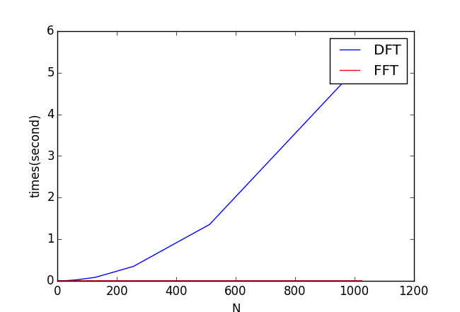

Fast Fourier transform (FFT)
Fast Fourier transform (FFT)
However, DFT is slow: the computation times of DFT is proportional to the square of the length of the series (\(N^2\)).
Fast Fourier transform (FFT) performs a very efficient DFT. The speed of FFT is far faster than DFT. FFT has a complexity of \(O(Nlog2(N))\).
Comparison of DFT and FFT
The following code compare
Create a dft_benchmark.py and measure the execution times of DFT function:
# Benchmark the execution times of DFT and FFT
import numpy
def DFT(x):
N = numpy.size(x)
X = numpy.zeros((N,),dtype=numpy.complex128)
for m in range(0,N):
for n in range(0,N):
X[m] += x[n]*numpy.exp(-numpy.pi*2j*m*n/N)
return X
import time
dft_time = []
fft_time = []
n_series = []
for N in numpy.power(2,range(1,11)):
print(N)
x = numpy.ones((N,))
# compute DFT
t0=time.time()
for pp in range(0,2):
X=DFT(x)
t1 = (time.time()-t0)/2.0
t0=time.time()
for pp in range(0,2):
X=numpy.fft.fft(x)
t2 = (time.time()-t0)/2.0
n_series.append(N)
dft_time.append(t1)
fft_time.append(t2)
import matplotlib.pyplot as pyplot
line_dft,=pyplot.plot(n_series, dft_time, label='DFT')
line_fft,=pyplot.plot(n_series, fft_time,'r',label='FFT')
pyplot.legend(handles=[line_dft, line_fft])
pyplot.ylabel('times(second)')
pyplot.xlabel('N')
pyplot.show()
The vast differrent performance of DFT and FFT can be seen in the following graph:
